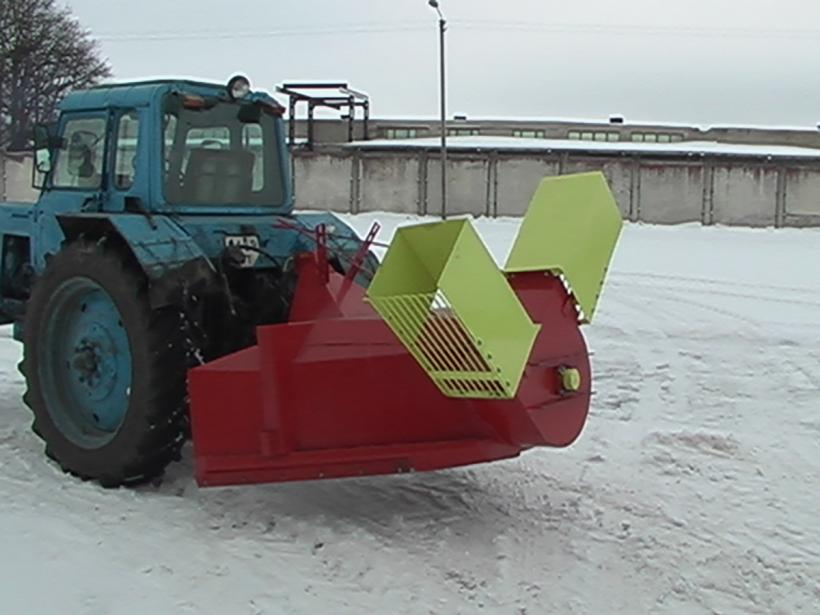

Sniego valytuvai | ZEMAKAINA.LT
2020.10.29 08:47
Prisijungimas Prisijungimas Prekių krepšelis Krepšelis tuščias. Viso prekių už 0 00 € Peržiūrėti krepšelį Prekių pristatymas Mokėjimo būdai Garantijos ir grąžinimas Kontaktai
8 666 81881
Užsakymai telefonu
9.00-18.00 darbo dienomis
Buičiai, darbams Sodo technika Plovimo įranga Grandininiai pjūklai Žoliapjovės, vejapjovės Trimeriai, krūmapjovės Motoblokai Kultivatoriai Lapų pūstuvai Šakų smulkintuvai Malkų skaldyklės Sniego valytuvai Šlavimo mašinos Gyvatvorių žirklės Siurbliai , hidroforai Aeratoriai, skarifikatoriai Priedai sodo technikai Sodo įrankiai Laistymo įranga Elektriniai įrankiai Medžio, metalo staklės Šlifuokliai Diskiniai pjūklai Frezavimo įrankiai Siaurapjūkliai Smūginiai gręžtuvai Suktuvai-gręžtuvai Perforatoriai Plytelių pjaustyklės Skiedinio maišyklės Betono maišyklės Fenai (orpūtės) Klijų pistoletai Generatoriai Oro kompresoriai Suvirinimo aparatai Elektriniai galąstuvai Šviestuvai, prožektoriai Akumuliatoriai, pakrovėjai Litavimo stotelės Rankiniai įrankiai Įrankių komplektai Replės, žnyplės Žirklės, sekatoriai Kabių pistoletai Kniedikliai Plaktukai Spaustuvai Kopėčios, pastoliai Matavimo prietaisai Nivelyrai Atstumo matuokliai Gulsčiukai Matavimo liniuotės Matlankiai Mikrometrai Slankmačiai Dulkių siurbliai, valytuvai Langų valytuvai Gariniai valytuvai Dulkių siurbliai (šluotos) Dulkių siurbliai (plaunantys) Dulkių siurbliai (cikloniniai) Dulkių siurbliai (robotai) Dulkių siurbliai (su maišeliu) Dulkių siurbliai (vakuuminiai) Siurbliai (pelenų, statyb.) Dulkių siurbliai (rankiniai) Dulkių siurblių priedai Automobilinė įranga Automobiliniai kompresoriai Domkratai, keltuvai Gariniai valytuvai Akumuliatorių pakrovėjai Dulkių siurbliai (automobiliniai) Šaldytuvai (automobiliniai) Įtampos keitikliai Spec. automobiliniai įrankiai Variklinė alyva Auto chemija Šildymo, vėdinimo įranga Oro kondicionieriai (mobilūs) Drėgmės surinkėjai Oro drėkintuvai Aromatizatoriai Oro valytuvai Oro ventiliatoriai Oro šildytuvai Bio-židiniai Orų stotelės Smulki buitinė technika Siuvimo mašinos Laidynės, lygintuvai Lygintuvai (garų generatoriai) Lyginimo sistemos Drabužių garintuvai Manekenai siuvimui Pūkų surinktuvai Gyvūnų prekės Kačių draskyklės Gyvūnų kirpimo mašinėlės Dirbtiniai augalai Dirbtiniai augalai (be žiedų) Dirbtiniai augalai (žydintys) Virtuvei, namams Smulki virtuvės technika Sulčiaspaudės Trintuvai, blenderiai Kokteilinės, plaktuvai Virtuviniai kombainai Virduliai (elektriniai) Mėsmalės Duonkepės Gruzdintuvės Sumuštinių keptuvės Keptuvai (blynų, vaflių) Mini kaitlentės, viryklės Griliai, keptuvai Konvekcinės krosnelės Mikrobangų krosnelės Smulkūs virtuvės prietaisai Svarstyklės (virtuvinės) Vakuumavimo įranga Ledų gaminimo aparatai Spragėsių aparatai Cukraus vatos aparatai Džiovintuvai (vaisių) Skrudintuvai Mėsos pjaustyklės Peilių galąstuvai Daržovių pjaustyklės Prieskonių malūnėliai Kiaušinių virtuvai Makaronų gaminimo aparatai Kavos parduotuvė Kavos aparatai (automatiniai) Kavos aparatai (espresso) Kavos aparatai (su filtru) Kavinukai (moka) Kavamalės Pieno putų plaktuvai Kavos aparatų priedai Puodai (elektriniai) Multifunkciniai puodai Slėginiai puodai (elektriniai) Ryžių puodai (elektriniai) Garpuodžiai (elektriniai) WOK puodai (elektriniai) Fondiu puodai (elektriniai) Puodai, keptuvės Keptuvės Puodai, troškintuvai Greitpuodžiai (metaliniai) Kazanai (ketaus) Ketaus indų rinkiniai Fondiu puodai, indai Arbatinukai Stelažai, lentynos Lentynos-stelažai (mediniai) Vyno lentynos (medinės) Dėžės (medinės) Lauko, sodo baldai Pietų baldų komplektai Poilsio baldų komplektai Gultai, šezlongai Kėdės, stalai Sulankstomi baldai Hamakai Lauko baldai - židiniai Kompiuteriai Žaidimų konsolės Kompiuteriai Spausdintuvai Projektoriai Nešiojami kompiuteriai Planšetiniai kompiuteriai Sportui, laisvalaikiui Treniruokliai Inversiniai stalai Steperiai Bėgimo takeliai Treniruokliai (elipsiniai) Treniruokliai (dviračiai) Treniruokliai (spinning) Treniruokliai (vibro) Treniruokliai (irklavimo) Treniruokliai (staklės) Treniruokliai (universalūs) Atsilenkimų suoliukai / treniruokliai Štangų suoliukai Apsauginiai klimėliai Masažinės kėdės Mankštos prekės Šiaurietiško ėjimo lazdos Pasipriešinimo gumos Gimnastikos lankai Mankštos kamuoliai Pakylos (aerobikos) Kilimėliai (mankštos) Prisitraukimų skersiniai Masažiniai volai Šokdynės Sukimosi diskai Balansinės platformos Sporto inventorius Vartai, krepšinio stovai Raketės, kamuoliuokai Sportiniai tinklai Kamuoliai Smiginio (Darts) rinkiniai Šachmatai, šaškės Stalo teniso stalai Bokso inventorius Turizmo reikmenys Šaltkrepšiai Iškylos pledai Bio-tualetai (nešiojami) Kuprinės Metalo detektoriai Žvejybos reikmenys Pripučiamos valtys Valčių varikliai Valčių priedai Ledo grąžtai Žuvies rūkyklos Išmanūs laikrodžiai Išmaniosios apyrankės Riedlentės, riedžiai Riedlentės Long boardai Penny boardai Riedlentės (elektrinės) Paspirtukai, dviračiai Paspirtukai suaugusiems Elektriniai paspirtukai Elektriniai dviračiai Svarmenys Svoriai ant rankų, kojų Pasunkintos liemenės Hantelių rinkiniai Girės, svarsčiai Jėgos maišai Pavėsinės, palapinės Pavėsinės (surenkamos) Baseinai Vandens pramogos Dronai Vaikų priežiūrai Tapymas pagal skaičius Piešimo rinkiniai (16,5x13cm) Piešimo rinkiniai (29,7x21cm) Piešimo rinkiniai (50x40cm) Deimantinė mozaika Wizardi WOOD Wizardi deimantinė mozaika Automobilinės kėdutės Autokėdutės (0 - 13kg vaikams) Autokėdutės (9 - 18kg vaikams) Autokėdutės (15-36kg vaikams) Autokėdutės (22-36kg vaikams) Vežimėliai, rogutės Vežimėliai (sportiniai) Vaikiškos rogutės Dviratukai, paspirtukai Dviratukai (balansiniai) Triratukai (su rankena) Vaikiški keturačiai Paspirtukai (vaikiški) Mašinėlės (paspiriamosios) Augantys baldai Augantys stalai Kėdės vaikams Baldų komplektai Lauko žaidimų įranga Lauko batutai Surenkami baseinai Maniežai, vaikštynės Maniežai kūdikiams Vaikštynės kūdikiams Vidaus žaidimų įranga Kamuoliukų baseinai Kėdutės, supynės Maitinimo kėdutės Supynės, gultukai kūdikiams Vaikų priežiūros prietaisai Svarstyklės (kūdikių) Elektroninės auklės Vaikiškos lovytės Sveikatai, grožiui Masažo stalai Masažo stalai (VIP serija) Masažo stalai (aliuminio) Masažo stalai (mediniai) Masažo stalai (stacionarūs) Masažo stalai (su Memory Foam) Masažo stalų komplektai Pagalvėlės, paaukštinimai Masažo stalų užvalkalai Kosmetologiniai krėslai Vertikalaus masažo kėdės Masažuotojo kėdutės Masažuokliai, šildyklės Masažinės sėdynės Masažuokliai (rankiniai) Masažinės vonelės Elektrinės šildyklės Masažo akmenys Aliejaus šildytuvai Medicinos technika Kraujospūdžio matuokliai Termometrai (elektroniniai) Alergijos terapijos prietaisai Šviesos terapijos lempos Elektrostimuliatoriai Inhaliatoriai Alkotesteriai Įrankių sterilizatoriai Grožio prietaisai Manikiūro, pedikiūro prietaisai Veido odos valymo aparatai Plaukų džiovintuvai Plaukų tiesintuvai Plaukų suktuvai Epiliatoriai Barzdaskutės, barzdakirpės Plaukų kirpimo mašinėlės Kosmetiniai veidrodžiai Fotoepiliatoriai Dantų šepetėliai Higienos prietaisai Išmanūs tualeto dangčiai Nešiojami bio-tualetai TOP AKCIJOSPrekių katalogas
Buičiai, darbams Sodo technika Plovimo įranga Aukšto slėgio plovyklos Plovyklų priedai Grandininiai pjūklai Akumuliatoriniai pjūklai Elektriniai grandininiai pjūklai Benzininiai grandininiai pjūklai Grandinių galandinimo staklės Žoliapjovės, vejapjovės Žoliapjovės (elektrinės) Žoliapjovės (benzininės) Žoliapjovės (mechaninės) Žoliapjovės (akumuliatorinės) Vejos traktoriukai, šienapjovės Trimeriai, krūmapjovės Benzininiai trimeriai Elektriniai trimeriai Akumuliatoriniai trimeriai Motoblokai Kultivatoriai Lapų pūstuvai Šakų smulkintuvai Malkų skaldyklės Sniego valytuvai Šlavimo mašinos Gyvatvorių žirklės Elektrinės gyvatvorių žirklės Akumuliatorinės gyv. žirklės Benzininės gyvatvorių žirklės Aukštapjovės, genėtuvai Siurbliai , hidroforai Aeratoriai, skarifikatoriai Priedai sodo technikai Alyvos, tepalai Skaldylių pleištai Technikos priedai Apsaugos veidui Sodo įrankiai Laistymo įranga Elektriniai įrankiai Medžio, metalo staklės Pjovimo staklės Obliavimo staklės Gręžimo staklės Frezavimo staklės Tekinimo staklės Šlifavimo staklės Darbastaliai Šlifuokliai Kampiniai šlifuokliai Ekscentriniai šlifuokliai Vibraciniai šlifuokliai Sienų ir lubų šlifuokliai Juostiniai šlifuokliai Trikampiai šlifuokliai Diskiniai pjūklai Frezavimo įrankiai Siaurapjūkliai Smūginiai gręžtuvai Suktuvai-gręžtuvai Perforatoriai Plytelių pjaustyklės Skiedinio maišyklės Betono maišyklės Fenai (orpūtės) Klijų pistoletai Generatoriai Oro kompresoriai Vienfaziai kompresoriai Trifaziai kompresoriai Pneumatiniai įrankiai Suvirinimo aparatai Elektriniai galąstuvai Šviestuvai, prožektoriai Akumuliatoriai, pakrovėjai Litavimo stotelės Rankiniai įrankiai Įrankių komplektai Replės, žnyplės Žirklės, sekatoriai Kabių pistoletai Kniedikliai Plaktukai Spaustuvai Kopėčios, pastoliai Matavimo prietaisai Nivelyrai Lazeriniai nivelyrai Optiniai nivelyrai Stovai, štatyvai Atstumo matuokliai Gulsčiukai Matavimo liniuotės Matlankiai Mikrometrai Slankmačiai Dulkių siurbliai, valytuvai Langų valytuvai Gariniai valytuvai Dulkių siurbliai (šluotos) Dulkių siurbliai (plaunantys) Dulkių siurbliai (cikloniniai) Dulkių siurbliai (robotai) Dulkių siurbliai (su maišeliu) Dulkių siurbliai (vakuuminiai) Siurbliai (pelenų, statyb.) Dulkių siurbliai (rankiniai) Dulkių siurblių priedai Automobilinė įranga Automobiliniai kompresoriai Domkratai, keltuvai Gariniai valytuvai Akumuliatorių pakrovėjai Dulkių siurbliai (automobiliniai) Šaldytuvai (automobiliniai) Termoelektriniai šaldytuvai Įtampos keitikliai Spec. automobiliniai įrankiai Variklinė alyva Auto chemija Šildymo, vėdinimo įranga Oro kondicionieriai (mobilūs) Drėgmės surinkėjai Oro drėkintuvai Aromatizatoriai Aromatiniai aliejai, filtrai Oro valytuvai Oro ventiliatoriai Oro šildytuvai Šildytuvai (spinduliniai) Šildytuvai (elektriniai) Šildytuvai (pramoniniai) Bio-židiniai Biokuras (bio-židiniams) Orų stotelės Smulki buitinė technika Siuvimo mašinos Siuvimo mašinos (elektromech.) Siuvimo mašinos (kompiuteriz.) Overlokai Siuvimo mašinų priedai Laidynės, lygintuvai Lygintuvai (garų generatoriai) Lyginimo sistemos Drabužių garintuvai Manekenai siuvimui Pūkų surinktuvai Gyvūnų prekės Kačių draskyklės Gyvūnų kirpimo mašinėlės Dirbtiniai augalai Dirbtiniai augalai (be žiedų) Dirbtiniai augalai (žydintys) Virtuvei, namams Smulki virtuvės technika Sulčiaspaudės Sulčiaspaudės (lėtaeigės) Sulčiaspaudės (išcentrinės) Sulčiaspaudės (citrusinių) Sulčiaspaudės (mechaninės) Trintuvai, blenderiai Kokteilinės, plaktuvai Virtuviniai kombainai Virduliai (elektriniai) Metaliniai virduliai Stikliniai virduliai Keramikiniai virduliai Plastikiniai virduliai Mėsmalės Duonkepės Gruzdintuvės Gruzdintuvės (be aliejaus) Gruzdintuvės (su aliejumi) Sumuštinių keptuvės Keptuvai (blynų, vaflių) Mini kaitlentės, viryklės Griliai, keptuvai Griliai (uždaro kepimo) Griliai (kepimo plokštės) Griliai (rakleto) Griliai (lauko) Grilių aksesuarai Konvekcinės krosnelės Mikrobangų krosnelės Smulkūs virtuvės prietaisai Svarstyklės (virtuvinės) Vakuumavimo įranga Maisto vakuumatoriai Vakuumavimo maišeliai Ledų gaminimo aparatai Spragėsių aparatai Cukraus vatos aparatai Džiovintuvai (vaisių) Skrudintuvai Mėsos pjaustyklės Peilių galąstuvai Daržovių pjaustyklės Pjaustyklės (elektrinės) Pjaustyklės (mechaninės) Prieskonių malūnėliai Kiaušinių virtuvai Makaronų gaminimo aparatai Kavos parduotuvė Kavos aparatai (automatiniai) Kavos aparatai (espresso) Kavos aparatai (su filtru) Kavinukai (moka) Kavamalės Pieno putų plaktuvai Kavos aparatų priedai Puodai (elektriniai) Multifunkciniai puodai Slėginiai puodai (elektriniai) Ryžių puodai (elektriniai) Garpuodžiai (elektriniai) WOK puodai (elektriniai) Fondiu puodai (elektriniai) Puodai, keptuvės Keptuvės Keptuvės (indukcinės) Keptuvės (ketaus) Keptuvės (tefloninės) Keptuvės (akmens masės) Puodai, troškintuvai Puodai (ketaus) Puodai (keramikiniai) Puodai (aliuminio lydinio) Puodai (rinkiniai) Greitpuodžiai (metaliniai) Kazanai (ketaus) Ketaus indų rinkiniai Fondiu puodai, indai Arbatinukai Arbatinukai (ketaus) Arbatinukai (metaliniai) Stelažai, lentynos Lentynos-stelažai (mediniai) Vyno lentynos (medinės) Dėžės (medinės) Lauko, sodo baldai Pietų baldų komplektai Poilsio baldų komplektai Gultai, šezlongai Kėdės, stalai Sulankstomi baldai Hamakai Lauko baldai - židiniai Kompiuteriai Žaidimų konsolės Kompiuteriai Spausdintuvai Projektoriai Nešiojami kompiuteriai Planšetiniai kompiuteriai Sportui, laisvalaikiui Treniruokliai Inversiniai stalai Steperiai Bėgimo takeliai Treniruokliai (elipsiniai) Treniruokliai (dviračiai) Treniruokliai (spinning) Treniruokliai (vibro) Treniruokliai (irklavimo) Treniruokliai (staklės) Treniruokliai (universalūs) Atsilenkimų suoliukai / treniruokliai Štangų suoliukai Apsauginiai klimėliai Masažinės kėdės Mankštos prekės Šiaurietiško ėjimo lazdos Pasipriešinimo gumos Gimnastikos lankai Mankštos kamuoliai Pakylos (aerobikos) Kilimėliai (mankštos) Prisitraukimų skersiniai Masažiniai volai Šokdynės Sukimosi diskai Balansinės platformos Sporto inventorius Vartai, krepšinio stovai Krepšinio stovai Futbolo vartai Raketės, kamuoliuokai Stalo teniso raketės Badmintono raketės Stalo teniso kamuoliukai Badmintono skrajukės Sportiniai tinklai Badmintono tinklai Tinklinio tinklai Futbolo tinklai Stalo teniso tinklai Krepšinio tinkliukai Kamuoliai Krepšinio kamuoliai Futbolo kamuoliai Tinklinio kamuoliai Rankinio kamuoliai Smiginio (Darts) rinkiniai Smiginio taikiniai Smiginio strėlytės Šachmatai, šaškės Stalo teniso stalai Bokso inventorius Bokso maišai Bokso pirštinės / šalmai Vaikiški bokso rinkiniai Turizmo reikmenys Šaltkrepšiai Iškylos pledai Bio-tualetai (nešiojami) Biotualetų priedai Kuprinės Metalo detektoriai Žvejybos reikmenys Pripučiamos valtys Valčių varikliai Valčių priedai Ledo grąžtai Žuvies rūkyklos Išmanūs laikrodžiai Išmaniosios apyrankės Riedlentės, riedžiai Riedlentės Long boardai Penny boardai Riedlentės (elektrinės) Paspirtukai, dviračiai Paspirtukai suaugusiems Elektriniai paspirtukai Elektriniai dviračiai Svarmenys Svoriai ant rankų, kojų Pasunkintos liemenės Hantelių rinkiniai Girės, svarsčiai Jėgos maišai Pavėsinės, palapinės Pavėsinės (surenkamos) Baseinai Vandens pramogos Dronai Vaikų priežiūrai Tapymas pagal skaičius Piešimo rinkiniai (16,5x13cm) Piešimo rinkiniai (29,7x21cm) Piešimo rinkiniai (50x40cm) Deimantinė mozaika Wizardi WOOD Wizardi deimantinė mozaika Automobilinės kėdutės Autokėdutės (0 - 13kg vaikams) Autokėdutės (9 - 18kg vaikams) Autokėdutės (15-36kg vaikams) Autokėdutės (22-36kg vaikams) Vežimėliai, rogutės Vežimėliai (sportiniai) Vaikiškos rogutės Dviratukai, paspirtukai Dviratukai (balansiniai) Triratukai (su rankena) Vaikiški keturačiai Paspirtukai (vaikiški) Mašinėlės (paspiriamosios) Augantys baldai Augantys stalai Kėdės vaikams Baldų komplektai Lauko žaidimų įranga Lauko batutai Surenkami baseinai Maniežai, vaikštynės Maniežai kūdikiams Vaikštynės kūdikiams Vidaus žaidimų įranga Laipiojimo kopetėlės Žaidimų stalai Stalo futbolas Biliardas Stalo ledo ritulys Pokeris Kamuoliukų baseinai Kėdutės, supynės Maitinimo kėdutės Supynės, gultukai kūdikiams Vaikų priežiūros prietaisai Svarstyklės (kūdikių) Elektroninės auklės Vaikiškos lovytės Sveikatai, grožiui Masažo stalai Masažo stalai (VIP serija) Masažo stalai (aliuminio) Masažo stalai (mediniai) Masažo stalai (stacionarūs) Masažo stalai (su Memory Foam) Masažo stalų komplektai Pagalvėlės, paaukštinimai Masažo stalų užvalkalai Kosmetologiniai krėslai Vertikalaus masažo kėdės Masažuotojo kėdutės Masažuokliai, šildyklės Masažinės sėdynės Masažuokliai (rankiniai) Masažinės vonelės Elektrinės šildyklės Masažo akmenys Karšto masažo akmenys Akmenų šildytuvai Aliejaus šildytuvai Medicinos technika Kraujospūdžio matuokliai Termometrai (elektroniniai) Vonios svarstyklės Dantų šepetėliai Alergijos terapijos prietaisai Šviesos terapijos lempos Elektrostimuliatoriai Inhaliatoriai Alkotesteriai Įrankių sterilizatoriai Grožio prietaisai Manikiūro, pedikiūro prietaisai Dantų šepetėliai Veido odos valymo aparatai Plaukų džiovintuvai Plaukų tiesintuvai Plaukų suktuvai Epiliatoriai Barzdaskutės, barzdakirpės Plaukų kirpimo mašinėlės Kosmetiniai veidrodžiai Fotoepiliatoriai Dantų šepetėliai Higienos prietaisai Išmanūs tualeto dangčiai Nešiojami bio-tualetai TOP AKCIJOS Pradžia / Buičiai, darbams / Sodo technika / Sniego valytuvaiBuičiai, darbams
Sodo technika Plovimo įranga Grandininiai pjūklai Žoliapjovės, vejapjovės Trimeriai, krūmapjovės Motoblokai Kultivatoriai Lapų pūstuvai Šakų smulkintuvai Malkų skaldyklės Sniego valytuvai Šlavimo mašinos Gyvatvorių žirklės Siurbliai , hidroforai Aeratoriai, skarifikatoriai Priedai sodo technikai Sodo įrankiai Laistymo įranga Elektriniai įrankiai Rankiniai įrankiai Matavimo prietaisai Dulkių siurbliai, valytuvai Automobilinė įranga Šildymo, vėdinimo įranga Smulki buitinė technika Gyvūnų prekės Dirbtiniai augalaiPrekių filtras
Valyti Gamintojas Valyti GARDEN PRO GardenPro Grizzly Hecht Honda IKRA GmbH IKRA MOGATEC MTD SCHEPPACH SUPTEC Wolf Garten Kaina, € Valyti nuo 100 € iki 199 € nuo 200 € iki 299 € nuo 300 € iki 499 € nuo 500 € Tipas Valyti Akumuliatorinis Benzininis ElektrinisSniego valytuvai
Sniego valytuvai efektyvesniam sniego valymui. Išsirinkite sniego valytuvą dabar.
1 - 32 iš 38 Prekių filtras Išvalyti filtrą -21 % Akumuliatorinis sniego valytuvas 40V 2.5Ah Ikra Mogatec 40V 2.5Ah Ikra Mogatec IAF 40-3325 Kodas: r 0530003811 Kaina 189 00 € 239 00 € Sutaupykite 50 00 € Snowthrower ME 66 T, MTD Kodas: 31BY7FT3678_MTD Kaina 1725 00 € Sniego valytuvas Optima ME 66, MTD Kodas: 31BY5FT3678_MTD Kaina 1295 00 € Sniego valytuvas Optima ME 76, MTD Kodas: 31AY5ET5678_MTD Kaina 1609 00 € Sniego valytuvas M 61, MTD Kodas: 31A-6BC2678_MTD Kaina 835 00 € Sniego valytuvas M 61, MTD Kodas: 31A-6AC2678_MTD Kaina 835 00 € Sniego valytuvas Optima ME 66, MTD Kodas: 4008423857160 Kaina 1295 00 € Sniego valytuvas Optima ME 76, MTD Kodas: 4008423848304 Kaina 1609 00 € -10 % Snowthrower ME 66 T, MTD Kodas: 4008423857184 Kaina 1549 00 € 1725 00 € Sutaupykite 176 00 € -10 % Sniego valytuvas Optima ME 76, MTD Kodas: st 4008423857177 Kaina 1449 00 € 1609 00 € Sutaupykite 160 00 € -7 % Dviejų pakopų benzininis savaeigis sniego pūtikas HECHT 9565 SE Kodas: H9565 Kaina 579 00 € 625 00 € Sutaupykite 46 00 € -23 % ELEKTRINIS SNIEGO VALYTUVAS HECHT 9181 E Kodas: H9181 Kaina 145 00 € 188 00 € Sutaupykite 43 00 € -14 % SNIEGO VALYTUVAS BENZININIS 5,5 AG / 4,11 KW SU EL. STARTERIU HECHT 9661 SE Kodas: H 9661 Kaina 620 00 € 720 00 € Sutaupykite 100 00 € -11 % SNIEGO VALYTUVAS BENZININIS 4,8 AG / 3,58 KW HECHT 9556 Kodas: H 9556 Kaina 465 00 € 525 00 € Sutaupykite 60 00 € -8 % Sniego valytuvas - šluota benzininis HECHT 8616 SE Kodas: H 8616 Kaina 599 99 € 650 00 € Sutaupykite 50 01 € -16 % Šlavimo mašina SC2200PE, Scheppach Kodas: r 4046664069317 Kaina 1429 00 € 1699 00 € Sutaupykite 270 00 € -11 % Sniego valytuvas Optima ME 66, MTD Kodas: st 4008423857160 Kaina 1150 00 € 1295 00 € Sutaupykite 145 00 € Benzininis sniego valytuvas Garden Pro KC214 Kodas: r KC214 Kaina 225 00 € Benzininis sniego valytuvas Garden Pro KC1130 S Kodas: r KC1130MS-A Kaina 875 00 € Benzininis sniego valytuvas Garden Pro KC1534MT Kodas: r KC1534MT Kaina 1298 99 € -21 % MOTORINĖ ŠLUOTA GARDEN PRO KCB25 (platus priedų pasirinkimas) Komentarai ( 1 ) Kodas: r KCB25 Kaina 745 00 € 945 00 € Sutaupykite 200 00 € Benzininis sniego valytuvas Garden Pro KC1334MS Kodas: r KC1334MS Kaina 1298 99 € Sniego valytuvas Honda HS 550 EA Kodas: HS550EA Kaina 799 00 € -15 % Sniego valytuvas M 61, MTD Kodas: st 31A-6AC2678MTD Kaina 709 99 € 835 00 € Sutaupykite 125 01 € Akumuliatorinis sniego valytuvas 40V 2.5Ah Ikra Mogatec 40V 2.5Ah Ikra Mogatec IAF 40-3325 - KOMPLEKTAS Komentarai ( 3 ) Kodas: r 05300038 Kaina 349 00 € -8 % Elektrinis sniego valytuvas HECHT 9161 Kodas: HECHT9161 Kaina 137 00 € 149 00 € Sutaupykite 12 00 € Benzininis sniego valytuvas HECHT 9533 Kodas: HECHT9533 Kaina 349 00 € -7 % Vienos pakopos benzininis sniego pūtikas HECHT 9401 Kodas: HECHT9401 Kaina 395 00 € 425 00 € Sutaupykite 30 00 € -6 % Dviejų pakopų benzininis savaeigis sniego pūtikas HECHT 9628 SE Kodas: HECHT9628SE Kaina 755 00 € 799 00 € Sutaupykite 44 00 € Dviejų pakopų benzininis savaeigis sniego pūtikas HECHT 9562 SE Kodas: HECHT9562SE Kaina 699 00 € Dviejų pakopų benzininis savaeigis sniego pūtikas HECHT 9665 SE Kodas: HECHT9665SE Kaina 835 00 € Elektrinis sniego valytuvas Ikra GmbH 1,5kW IEST 1500 Kodas: 4010951830096 Kaina 109 00 € 1 2 Jei šaltuoju metų laiku pabosta kone kasdien valyti pusnis, tuomet pats laikas įsigyti sniego valytuvą.Kas svarbu, renkantis sniego valytuvą? Pirmiausia, tai įvertinkite savo poreikius, t. y. ką ir kai dažnai valysite.
Sniego valytuvai skirstomi į vienpakopius ir dvipakopius. Pirmieji yra skirti nesudėtingiems namų ūkio darbams, pavyzdžiui, nedideliems kiemams, takeliams pravalyti. Vienpakopis sniego valytuvas yra nesudėtingos konstrukcijos įrenginys, bet jo visiškai pakaks sniegui aplink namus nuvalyti. Šio tipo valytuvas neturi ventiliatoriaus sparnuotės, varomų ratų. Dvipakopiai sniego valytuvai puikiai tiks didelėms sniego pusnims valyti, taip pat lengvai įveiks susigulėjusį, sunkų sniegą. Šio tipo valytuvai turi varomus ratus, o sniegas, kaip sako pats pavadinimas, per įrenginį pereina dviem etapais.
Sniego valytuvai gali būti su vairo stiprintuvuir be stiprintuvo. Turintį vairo stiprintuvą sniego valytuvą lengviau valdyti, jis manevringesnis.
Sniego valytuvai elektriniai, benzininiai, akumuliatoriniai – kurį pasirinkti? Viskas priklauso nuo to, kaip dažnai, kokį sniegą valysite, kokiais kiekiais. Elektrinis įrenginys bus mažesnio galingumo, jo veiklos plotas ribotas ir jam būtina elektros energija. Benzininiai valytuvai yra galingesni, jų veiklos plotas neribojamas, dirba kiek garsiau, tinka dideliems plotams, sunkesniam sniegui valyti. O štai akumuliatoriniai valytuvai turi vieną minusą – akumuliatorius išsikrauna, bet jei turėsite papildomą, tai šio trūkumo nė nepajusite.
Atsižvelgdami į darbų apimtis, teritorijos ypatumus, įvertinkite, kokio darbinio pločio ir darbinio aukščio valytuvas Jums bus naudingiausias.
Vertinantiems kokybę, patvarumą ir patrauklią kainą el. parduotuvė ZemaKaina.lt siūlo patikimų, pasauliniu lygmeniu pripažintų gamintojų sniego valytuvus: GardenPro, Grizzly, Hecht, Honda, Ikra, MTD, Suptec, WolfGarten.
Sniego valytuvai internetu el. parduotuvėje ZemaKaina.lt – tai patogumas, sparta ir geriausios kainos. Lengvai išsirinksite norimą sniego valytuvą – užtruksite vos kelias minutes, tad pirkimas internetu taupys Jūsų laiką ir finansus. Negana to, jau po poros dienų pirkinys pasieks Jus nurodytu adresu. Pirkti internetu ypač patogu, jei sniegas, kaip dažnai pasitaiko, užklupo netikėtai, tokiu atveju Jums nereikės važinėti po parduotuves ir rinktis valytuvo, tiesiog užsisakykite jį ir netrukus galėsite patogiai valyti savo kiemą.
Pristatymo sąlygos Apmokėjimo būdai Garantijos ir grąžinimas Garantijos pratęsimas Pirkimas išsimokėtinai TAX FREE El. atliekų surinkimas Naujienlaiškio prenumerata Klientų atsiliepimai Pirkėjo gidas Pirkimo taisyklės Privatumo politika INTERNETINĖ PARDUOTUVĖ | Ta pati kokybė, tik ZEMAKAINA.LT MB Deinama. Kodas: 305036380. PVM mokėtojo kodas: LT100012209812. Pabradės g. 27, LT-45443, Kaunas. Telefonas: +37066681881. Sąskaitos nr.: LT817300010157926238, Swedbank. Banko kodas: 73000, SWIFT: HABALT22. © 2020 MB Deinama. Be MB Deinama sutikimo draudžiama kopijuoti ir platinti svetainėje esančią informaciją. El. parduotuvių kūrimas: evispa.lt